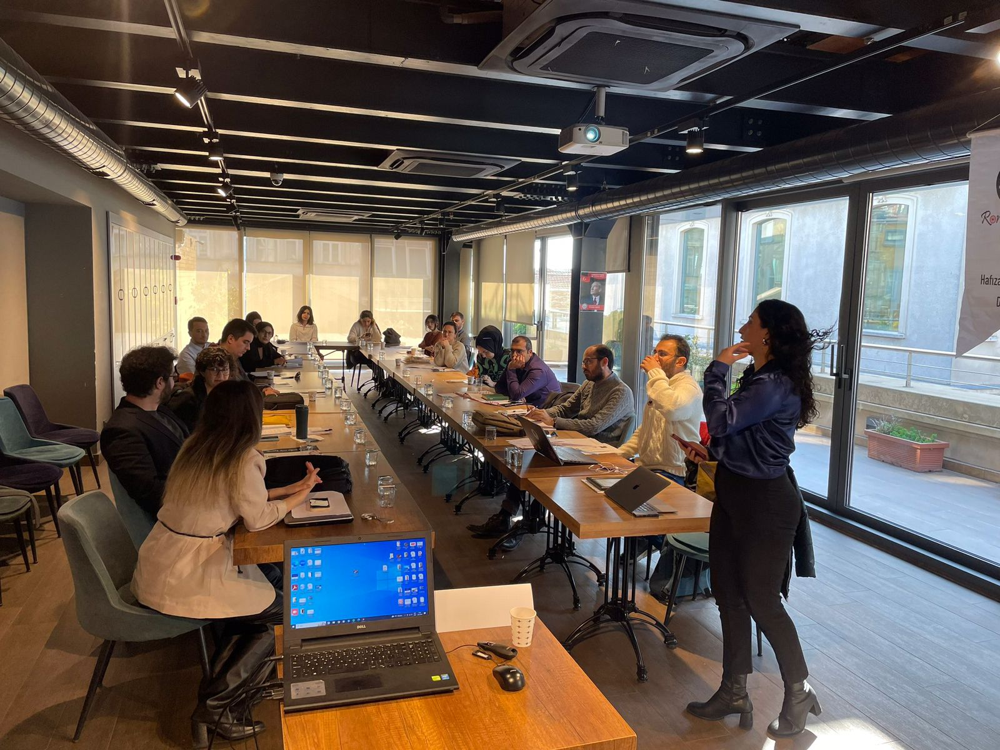
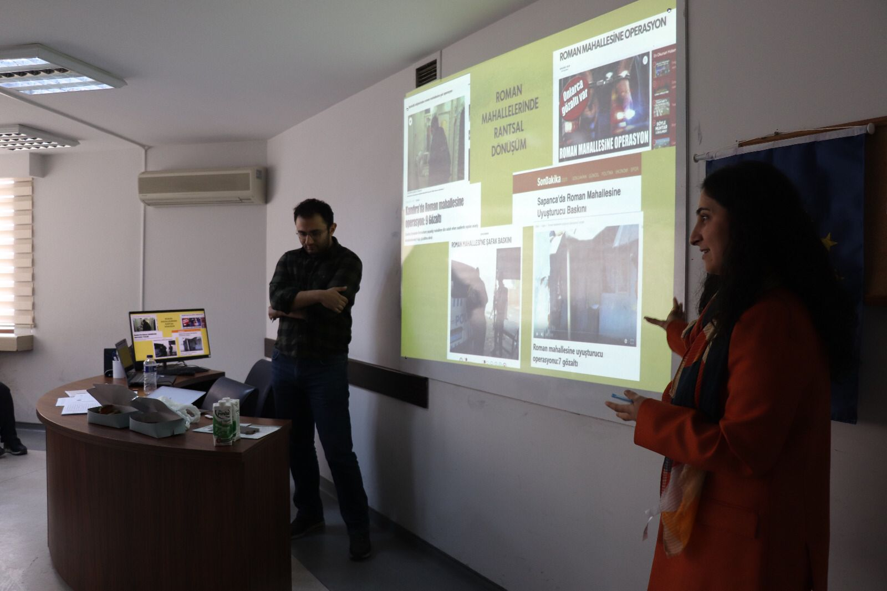
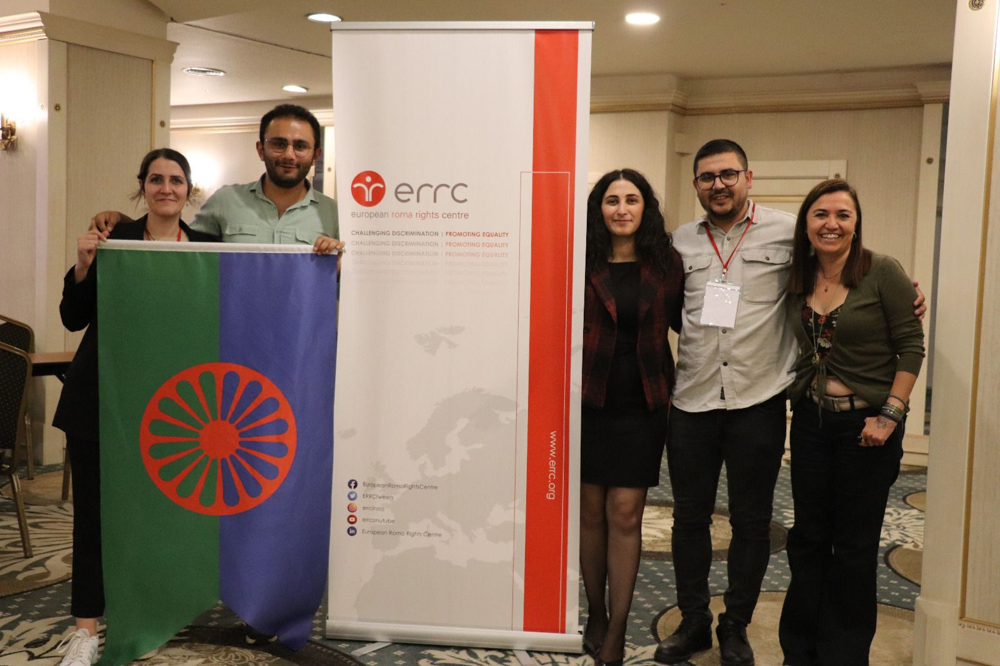

Romani Godi Derneği, ayrımcılık riski altındaki Roman, Dom ve Abdal topluluklarına yönelik sunduğu desteklerle ön plandadır. Misyonumuz, bu topluluklara yönelik ayrımcılıkla mücadele ederek haklarını savunmak ve adalete erişimlerini kolaylaştırmaktır.
Gönüllü Avukat Ağı ve Hukuki Danışmanlık
Romani Godi Derneği, gönüllü avukat ağı ve öz kaynakları oranında, ayrımcılık riski altındaki her Roman yurttaşa hukuki danışmanlık desteği sunmaktadır. İhtiyaç halinde, bir avukata erişim için ekonomik sorumluluğu üstlenerek, gençlerin adalete erişimini sağlamaktayız. Sunmuş olduğumuz bu destekler ile, hukuki süreçlerde bireylerin yanındayız ve onların haklarını savunmalarına yardımcı oluyoruz.
Dava Süreçleri ve Bağımsız Gözlem
Dava süreçlerinde avukat desteğinin yanı sıra, kritik davalarda bağımsız dava gözlemi çalışmaları yürütüyoruz. Bu sayede, adaletin tarafsız ve şeffaf bir şekilde işlemesini sağlıyor, bireylerin hukuki mücadelelerinde güçlü bir destek sunuyoruz. Roman, Dom ve Abdal toplulukları, hukuki süreçlerde yalnız olmadıklarını bilmelidir.
Eğitim ve Bilgilendirme Faaliyetleri
Esma Redzepova Akademi ve Türkiye’de Roman Karşıtlığı ile Mücadele kapsamında, Roman gençlerin insan hakları, hukuk okur-yazarlığı ve eşitlik mekanizmalarına başvuru konularında bilgi ve kapasitelerini artırmaya yönelik çeşitli eğitim programları düzenliyoruz. Bu programlar, gençlerin bilinçlenmesini ve haklarını daha iyi savunabilmelerini sağlamaktadır.
Her Zaman Yanınızdayız
Romani Godi Derneği olarak, Roman, Dom ve Abdal topluluklarının yaşadığı ayrımcılık ve benzeri durumlarda her zaman yanınızdayız. Haklarınızı savunmak, adalete erişiminizi kolaylaştırmak ve ayrımcılıkla mücadele etmek için buradayız. Hukuki destek ve danışmanlık desteğimiz ile, bireylerin haklarını savunmalarına yardımcı olurken, bağımsız dava gözlemi çalışmaları adaletin şeffaflığını ve tarafsızlığını sağlamaktadır. Eğitim programlarımız ise gençlerin bilgi kapasitelerini artırarak, geleceğe daha güvenle bakmalarını mümkün kılmaktadır.
Desteğimizin Önemi ve Faydaları
Romani Godi olarak sunduğumuz destek, ayrımcılık riski altındaki bireylerin adalete erişimini kolaylaştırmakta ve onlara güven vermektedir. Hukuki destek ve danışmanlık desteğimiz, bireylerin haklarını savunmalarına yardımcı olurken, bağımsız dava gözlemi çalışmaları adaletin şeffaflığını ve tarafsızlığını sağlamaktadır. Eğitim programlarımız ise gençlerin bilgi kapasitelerini artırarak, geleceğe daha güvenle bakmalarını mümkün kılmaktadır.
Romani Godi Derneği olarak, ayrımcılık riski altındaki Roman, Dom ve Abdal topluluklarına destek olmaktan gurur duyuyoruz.
Haklarınızın savunulması ve adalete erişiminiz için buradayız, sizinleyiz.